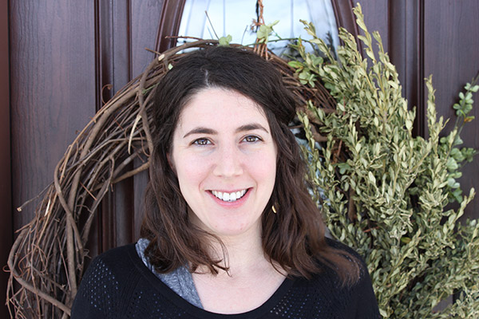

Strengthening organizations and the students they serve
with tools for post-secondary success.
Every student deserves a quality education . I work with non-profit organizations and schools on college access projects that empower students and their communities. Within organizations, I help clients move from the planning phase to program launch and implementation. Externally, I build public, private and community partnerships aimed at engaging and supporting students and their families.
About Me

Throughout my career I have served over one hundred public high schools, thousands of underserved students and families, and dozens of high school and college faculty.
At The City University of New York (CUNY), I oversaw a college access program that served more than 2,000 high school seniors and 500 college students each year. I have since supported networks of New York City and Westchester county guidance counselors in creating effective 9th through 12th grade college/career readiness systems. I have also worked within both the CUNY and SUNY systems to develop and sustain increased college retention and graduation rates.
I received my Bachelor’s degree in English Literature from Binghamton University, and my Master’s degree in Social Policy from SUNY Empire State College.
Services
Collaborative Strategic Planning:
Program replication and expansion
Improving student services and impact
Creating efficiencies
Program Design:
Helping clients move from ideas to implementation
Staff Support and Resource Development:
Developing supports and structures for high school and college faculty
Creating strategic partnerships
Facilitation/Coaching
Writing and Presentation:
Helping clients reframe, sharpen, and communicate value and impact
Projects
The City University of New York (CUNY)
At CUNY, I was responsible for program oversight, professional development, and managing relationships with the NYC Department of Education and school support networks.
I oversaw a $250,000 grant, which funded a college access and success program for seniors at 8 transfer high schools in New York City
I facilitated college-going culture working groups with high school teachers, counselors and administrators
I developed systems for cohort placement testing, score reporting and advisement for 1,000 NYC high school seniors on 8 college campuses
New Visions for Public Schools
At New Visions, I was responsible for supporting and deepening the organization’s college readiness, access, transition, and completion agenda.
I designed and facilitated professional development workshops for guidance counselors and college advisors, created a newsletter, and developed a resource library in order to replicate best practices within the network.
I developed a career shadow day toolkit including best practices, checklists and sample surveys, and launched a corporate partnership program with one of NYC’s most sought-after tech start-ups in order to serve students interested in software engineering careers and to address diversity issues in the tech field.
I developed partnerships with colleges, opportunity programs and community organizations to create robust post-secondary pathways for students
SUNY Westchester Community College
At WCC, I was hired to develop and implement systems for a college transition initiative serving high school seniors and WCC students.
I collaborated with key senior leaders, high school faculty, and student ambassadors in order to develop a strategic plan for student support and retention
I conducted focus groups and gathered staff feedback in order to make program recommendations
I developed proposals, reports and budgets to ensure program fidelity and to aid in the recruitment of new partner high schools